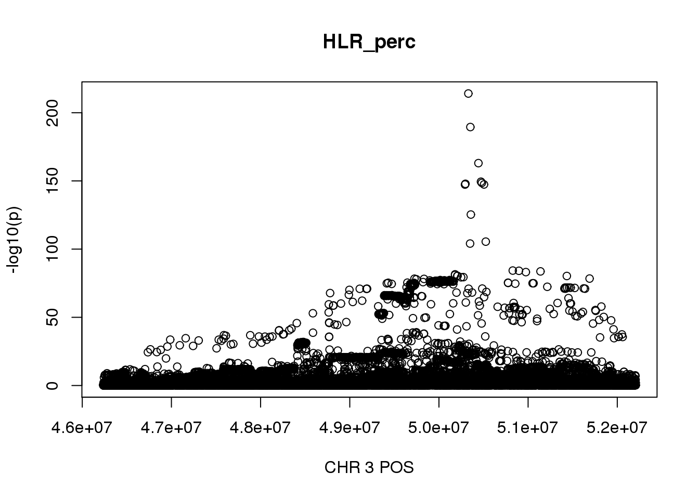
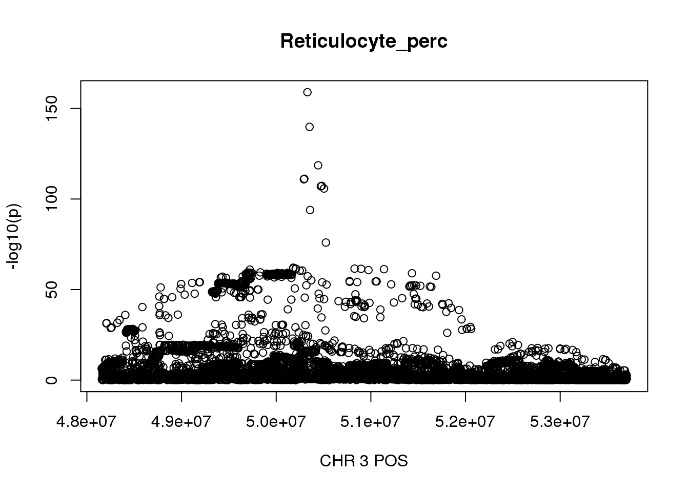
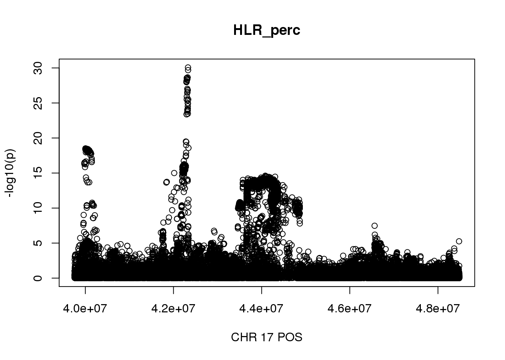
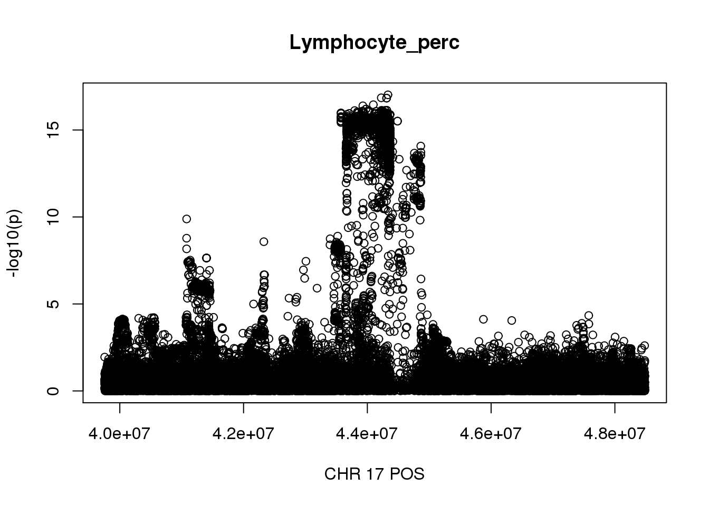

Last updated: 2020-12-06
Checks: 7 0
Knit directory: finemap-uk-biobank/
This reproducible R Markdown analysis was created with workflowr (version 1.6.1). The Checks tab describes the reproducibility checks that were applied when the results were created. The Past versions tab lists the development history.
Great! Since the R Markdown file has been committed to the Git repository, you know the exact version of the code that produced these results.
Great job! The global environment was empty. Objects defined in the global environment can affect the analysis in your R Markdown file in unknown ways. For reproduciblity it’s best to always run the code in an empty environment.
The command set.seed(20191114) was run prior to running the code in the R Markdown file. Setting a seed ensures that any results that rely on randomness, e.g. subsampling or permutations, are reproducible.
Great job! Recording the operating system, R version, and package versions is critical for reproducibility.
Nice! There were no cached chunks for this analysis, so you can be confident that you successfully produced the results during this run.
Great job! Using relative paths to the files within your workflowr project makes it easier to run your code on other machines.
Great! You are using Git for version control. Tracking code development and connecting the code version to the results is critical for reproducibility.
The results in this page were generated with repository version 6411a06. See the Past versions tab to see a history of the changes made to the R Markdown and HTML files.
Note that you need to be careful to ensure that all relevant files for the analysis have been committed to Git prior to generating the results (you can use wflow_publish or wflow_git_commit). workflowr only checks the R Markdown file, but you know if there are other scripts or data files that it depends on. Below is the status of the Git repository when the results were generated:
Ignored files:
Ignored: analysis/figure/
Untracked files:
Untracked: scripts/bloodcells.steps.md
Untracked: scripts/maf.R
Untracked: scripts/mafinfo.R
Unstaged changes:
Modified: scripts/get_bloodcells_trait_regions.R
Note that any generated files, e.g. HTML, png, CSS, etc., are not included in this status report because it is ok for generated content to have uncommitted changes.
These are the previous versions of the repository in which changes were made to the R Markdown (analysis/bloodcells_regions_maf001_info6.Rmd) and HTML (docs/bloodcells_regions_maf001_info6.html) files. If you’ve configured a remote Git repository (see ?wflow_git_remote), click on the hyperlinks in the table below to view the files as they were in that past version.
| File | Version | Author | Date | Message |
|---|---|---|---|---|
| Rmd | 6411a06 | zouyuxin | 2020-12-06 | wflow_publish(“analysis/bloodcells_regions_maf001_info6.Rmd”) |
| Rmd | 6c66186 | zouyuxin | 2020-12-06 | Create bloodcells_regions_maf001_info6.Rmd |
There are 248,980 individuals of white British ancestries with 16 blood cells phenotypes. The script to prepare the phenotypes and covariates is get_bloodcells. The filtering steps are also described here
For genotype data, variants with imputation score (INFO) > 0.6, MAF > 0.1% are included in association studies.
The script to run GWAS is GWAS
For each phenotype, regions for fine-mapping are defined by greedily starting with the most significantly associated SNP, including SNPs within a window of 500kb centered at the SNP, until we include all significant SNPs (p < 5e-8). We merge ovelapping regions. We exclude HLA region (chr6: 25Mb - 36Mb). The steps are
Find the most significantly associated SNP.
Choose region +- 250kb around the SNP.
Find the next most significantly associated SNP ouside the selected regions.
Choose region +- 250kb around the SNP.
Merge regions if they overlap. …
When we select region across traits, we include all regions from each pheotype and merge overlapping regions. This produces some very large regions with more than 10000 SNPs.
library(data.table)
library(dplyr)
library(kableExtra)
library(knitr)
pheno_names = c("WBC_count", "RBC_count", "Haemoglobin", "MCV", "RDW", "Platelet_count",
"Plateletcrit", "PDW", "Lymphocyte_perc", "Monocyte_perc",
"Neutrophill_perc", "Eosinophill_perc", "Basophill_perc",
"Reticulocyte_perc", "MSCV", "HLR_perc")trait_regions = list()
for(trait in pheno_names){
region = fread(paste0('/gpfs/data/stephens-lab/finemap-uk-biobank/data/raw/BloodCells/regions_raw/', trait, '_regions'))
region = region %>% arrange(desc(logp))
region_r = c()
for(i in 1:22){
region.chr = region %>% filter(CHR == i) %>% arrange(start)
if(nrow(region.chr) == 0){
next
}
tmp = region.chr %>% group_by(g = cumsum(cummax(lag(end, default = first(end))) < start)) %>%
summarise(start = first(start), end = max(end), logp = max(logp),.groups = 'drop') %>%
mutate(length = end - start) %>%
mutate(CHR = i) %>% select(CHR, start, end, length, logp)
region_r = rbind(region_r, tmp)
}
trait_regions[[trait]] = region_r
}Summary of region length for each phenotype before selecting regions across traits:
for(trait in pheno_names){
tb = rbind(summary(trait_regions[[trait]]$length), summary(trait_regions[[trait]]$logp))
rownames(tb) = c('region_length', 'region_max_log10p')
tb = round(tb,3) %>% kbl(caption = paste0(trait, ': ', nrow(trait_regions[[trait]]), ' regions')) %>% kable_styling()
cat(tb)
cat("\n")
}| Min. | 1st Qu. | Median | Mean | 3rd Qu. | Max. | |
|---|---|---|---|---|---|---|
| region_length | 358597.000 | 5.000e+05 | 500000.000 | 616867.616 | 500000.000 | 2372028.000 |
| region_max_log10p | 7.327 | 8.519e+00 | 10.812 | 15.411 | 14.804 | 213.266 |
| Min. | 1st Qu. | Median | Mean | 3rd Qu. | Max. | |
|---|---|---|---|---|---|---|
| region_length | 333545.000 | 5.000e+05 | 500000.000 | 653697.2 | 754540.250 | 3375036 |
| region_max_log10p | 7.307 | 8.763e+00 | 11.279 | Inf | 18.508 | Inf |
| Min. | 1st Qu. | Median | Mean | 3rd Qu. | Max. | |
|---|---|---|---|---|---|---|
| region_length | 385285.000 | 5.000e+05 | 500000.000 | 615744.65 | 500000.000 | 3251867.000 |
| region_max_log10p | 7.302 | 8.272e+00 | 10.299 | 17.05 | 16.347 | 261.853 |
| Min. | 1st Qu. | Median | Mean | 3rd Qu. | Max. | |
|---|---|---|---|---|---|---|
| region_length | 5.000e+05 | 5.000e+05 | 500000.00 | 677738.8 | 781996.000 | 2920824 |
| region_max_log10p | 7.303e+00 | 9.609e+00 | 13.19 | Inf | 21.207 | Inf |
| Min. | 1st Qu. | Median | Mean | 3rd Qu. | Max. | |
|---|---|---|---|---|---|---|
| region_length | 352293.000 | 5.000e+05 | 500000.000 | 660592 | 751597.250 | 4089364 |
| region_max_log10p | 7.309 | 8.976e+00 | 12.738 | Inf | 24.206 | Inf |
| Min. | 1st Qu. | Median | Mean | 3rd Qu. | Max. | |
|---|---|---|---|---|---|---|
| region_length | 347438.000 | 5.000e+05 | 500000.000 | 694188.9 | 769307.250 | 4622708 |
| region_max_log10p | 7.324 | 9.067e+00 | 12.122 | Inf | 21.742 | Inf |
| Min. | 1st Qu. | Median | Mean | 3rd Qu. | Max. | |
|---|---|---|---|---|---|---|
| region_length | 296565.000 | 5.000e+05 | 500000.000 | 668189.6 | 762096.500 | 4144063 |
| region_max_log10p | 7.317 | 8.932e+00 | 11.455 | Inf | 19.365 | Inf |
| Min. | 1st Qu. | Median | Mean | 3rd Qu. | Max. | |
|---|---|---|---|---|---|---|
| region_length | 327279.000 | 5.000e+05 | 500000.000 | 671565.3 | 755901.2 | 4239970 |
| region_max_log10p | 7.318 | 8.972e+00 | 12.679 | Inf | 24.2 | Inf |
| Min. | 1st Qu. | Median | Mean | 3rd Qu. | Max. | |
|---|---|---|---|---|---|---|
| region_length | 442725.000 | 5.000e+05 | 500000.000 | 627500.270 | 754628.000 | 2239954.000 |
| region_max_log10p | 7.325 | 9.074e+00 | 11.341 | 16.363 | 17.019 | 152.602 |
| Min. | 1st Qu. | Median | Mean | 3rd Qu. | Max. | |
|---|---|---|---|---|---|---|
| region_length | 359265.000 | 5.000e+05 | 500000.000 | 674078.3 | 757106.500 | 3506298 |
| region_max_log10p | 7.357 | 8.681e+00 | 11.777 | Inf | 21.638 | Inf |
| Min. | 1st Qu. | Median | Mean | 3rd Qu. | Max. | |
|---|---|---|---|---|---|---|
| region_length | 442725.000 | 5.000e+05 | 500000.000 | 628331.853 | 500000.000 | 2208916.000 |
| region_max_log10p | 7.303 | 8.458e+00 | 11.027 | 16.193 | 16.381 | 193.111 |
| Min. | 1st Qu. | Median | Mean | 3rd Qu. | Max. | |
|---|---|---|---|---|---|---|
| region_length | 399122.000 | 5.00e+05 | 500000.000 | 669949.154 | 750962.000 | 3994646.000 |
| region_max_log10p | 7.328 | 9.09e+00 | 13.004 | 20.376 | 20.883 | 212.968 |
| Min. | 1st Qu. | Median | Mean | 3rd Qu. | Max. | |
|---|---|---|---|---|---|---|
| region_length | 5.000e+05 | 5.000e+05 | 500000.00 | 589399.318 | 500000.000 | 2576368.000 |
| region_max_log10p | 7.364e+00 | 8.368e+00 | 11.48 | 17.159 | 16.718 | 134.511 |
| Min. | 1st Qu. | Median | Mean | 3rd Qu. | Max. | |
|---|---|---|---|---|---|---|
| region_length | 282465.000 | 5.00e+05 | 500000.000 | 662615.8 | 753719.250 | 5547602 |
| region_max_log10p | 7.302 | 8.39e+00 | 11.687 | Inf | 19.669 | Inf |
| Min. | 1st Qu. | Median | Mean | 3rd Qu. | Max. | |
|---|---|---|---|---|---|---|
| region_length | 373852.000 | 5.00e+05 | 500000.000 | 671368 | 759403.000 | 3368512 |
| region_max_log10p | 7.328 | 9.27e+00 | 12.339 | Inf | 21.431 | Inf |
| Min. | 1st Qu. | Median | Mean | 3rd Qu. | Max. | |
|---|---|---|---|---|---|---|
| region_length | 404815.000 | 5.000e+05 | 500000.000 | 687238 | 775889.250 | 5973226 |
| region_max_log10p | 7.304 | 8.818e+00 | 12.009 | Inf | 19.187 | Inf |
For HLR_perc, the maximum region is at CHR 3 from 46234573 to 52207799, which includes 18225 SNPs.
gwas_HLR_perc = fread('/gpfs/data/stephens-lab/finemap-uk-biobank/data/raw/BloodCells/gwas_maf001_info6/bloodcells_gwas_HLR_perc')
colnames(gwas_HLR_perc)[1] = 'CHR'
gwas_HLR_perc$P = as.numeric(gwas_HLR_perc$P)
gwas_HLR_perc = gwas_HLR_perc %>% select(CHR, POS, T_STAT, P) %>% mutate(logp = -log10(P))
gwas_HLR_perc.sub = gwas_HLR_perc %>% filter(CHR == 3, POS >= 46234573, POS <=52207799)
plot(gwas_HLR_perc.sub$POS, gwas_HLR_perc.sub$logp, xlab='CHR 3 POS', ylab='-log10(p)', main='HLR_perc') For Reticulocyte_perc, the maximum region is at CHR 3 from 48155661 to 53703263, which includes 17661 SNPs.
gwas_Reticulocyte_perc = fread('/gpfs/data/stephens-lab/finemap-uk-biobank/data/raw/BloodCells/gwas/bloodcells_gwas_Reticulocyte_perc')
colnames(gwas_Reticulocyte_perc)[1] = 'CHR'
gwas_Reticulocyte_perc$P = as.numeric(gwas_Reticulocyte_perc$P)
gwas_Reticulocyte_perc = gwas_Reticulocyte_perc %>% select(CHR, POS, T_STAT, P) %>% mutate(logp = -log10(P))
gwas_Reticulocyte_perc.sub = gwas_Reticulocyte_perc %>% filter(CHR == 3, POS >= 48155661, POS <=53703263)
plot(gwas_Reticulocyte_perc.sub$POS, gwas_Reticulocyte_perc.sub$logp, xlab='CHR 3 POS', ylab='-log10(p)', main='Reticulocyte_perc')
Select regions across phenotype:
tb = bind_rows(trait_regions, .id = "column_label")
res.final = c()
for(i in 1:22){
tb.chr = tb %>% filter(CHR == i) %>% arrange(start)
if(nrow(tb.chr) == 0){
next
}
tmp = tb.chr %>% group_by(g = cumsum(cummax(lag(end, default = first(end))) < start)) %>%
summarise(start = first(start), end = max(end), logp = max(logp), .groups = 'drop') %>%
mutate(length = end - start) %>%
mutate(CHR = i) %>% select(CHR, start, end, length, logp)
res.final = rbind(res.final, tmp)
}
snpsnum = c()
for(i in 1:nrow(res.final)){
snpsnum = c(snpsnum, gwas_HLR_perc %>% filter(CHR == res.final$CHR[i],
POS >= res.final$start[i],
POS <= res.final$end[i]) %>% nrow )
}
res.final$snpsnum = snpsnumSummary of regions:
tb = rbind(summary(res.final$length), summary(res.final$snpsnum), summary(res.final$logp))
rownames(tb) = c('region_length', 'region_num_snps', 'region_max_log10p')
round(tb,3) %>% kbl(caption = paste0(nrow(res.final), ' regions')) %>% kable_styling()| Min. | 1st Qu. | Median | Mean | 3rd Qu. | Max. | |
|---|---|---|---|---|---|---|
| region_length | 411728.000 | 5.000e+05 | 686115.000 | 961074.882 | 1094505.000 | 8729501 |
| region_num_snps | 93.000 | 2.630e+03 | 3514.000 | 4776.238 | 5718.000 | 36605 |
| region_max_log10p | 7.322 | 9.868e+00 | 14.952 | Inf | 33.395 | Inf |
There are 975 regoins in total, 80 regions with length greater than 2Mb, 70 regions contain more than 10000 SNPs, 292 regions contain more than 5000 SNPs.
The region with maximum length and maximum number of SNPs:
gwas_HLR_perc.max = gwas_HLR_perc %>% filter(CHR == 17, POS >= 39754910, POS <=48484411)
plot(gwas_HLR_perc.max$POS, gwas_HLR_perc.max$logp, xlab='CHR 17 POS', ylab='-log10(p)', main='HLR_perc')
gwas_Lymphocyte_perc = fread('/gpfs/data/stephens-lab/finemap-uk-biobank/data/raw/BloodCells/gwas_maf001_info6/bloodcells_gwas_Lymphocyte_perc')
colnames(gwas_Lymphocyte_perc)[1] = 'CHR'
gwas_Lymphocyte_perc$P = as.numeric(gwas_Lymphocyte_perc$P)
gwas_Lymphocyte_perc = gwas_Lymphocyte_perc %>% select(CHR, POS, T_STAT, P) %>% mutate(logp = -log10(P))
gwas_Lymphocyte_perc.max = gwas_Lymphocyte_perc %>% filter(CHR == 17, POS >= 39754910, POS <=48484411)
plot(gwas_Lymphocyte_perc.max$POS, gwas_Lymphocyte_perc.max$logp, xlab='CHR 17 POS', ylab='-log10(p)', main='Lymphocyte_perc')
sessionInfo()R version 3.5.0 (2018-04-23)
Platform: x86_64-pc-linux-gnu (64-bit)
Running under: Red Hat Enterprise Linux Server release 6.7 (Santiago)
Matrix products: default
BLAS: /gpfs/apps/haswell/software/gcc-6.2.0/R/3.5.0/lib64/R/lib/libRblas.so
LAPACK: /gpfs/apps/haswell/software/gcc-6.2.0/R/3.5.0/lib64/R/lib/libRlapack.so
locale:
[1] C
attached base packages:
[1] stats graphics grDevices utils datasets methods base
other attached packages:
[1] knitr_1.21 kableExtra_1.3.1 dplyr_0.8.3 data.table_1.12.0
loaded via a namespace (and not attached):
[1] Rcpp_1.0.2 highr_0.7 compiler_3.5.0
[4] pillar_1.3.1 later_0.7.5 git2r_0.26.1
[7] workflowr_1.6.1 tools_3.5.0 digest_0.6.22
[10] viridisLite_0.3.0 evaluate_0.12 tibble_2.0.1
[13] pkgconfig_2.0.3 rlang_0.4.1 rstudioapi_0.9.0
[16] yaml_2.2.0 xfun_0.4 stringr_1.3.1
[19] httr_1.4.0 xml2_1.2.0 fs_1.3.1
[22] webshot_0.5.1 rprojroot_1.3-2 tidyselect_0.2.5
[25] glue_1.3.1 R6_2.4.0 rmarkdown_1.11
[28] purrr_0.3.0 magrittr_1.5 whisker_0.3-2
[31] backports_1.1.5 scales_1.0.0 promises_1.0.1
[34] htmltools_0.3.6 assertthat_0.2.1 rvest_0.3.2
[37] colorspace_1.4-1 httpuv_1.4.5.1 stringi_1.2.4
[40] munsell_0.5.0 crayon_1.3.4